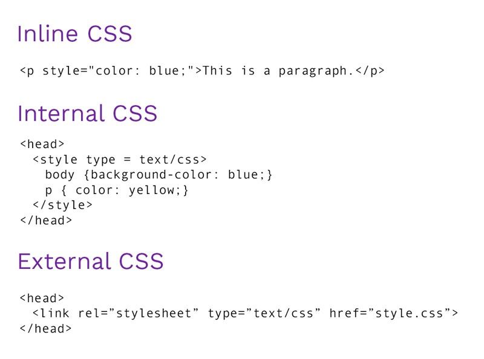

Existen tres opciones para incluir estilos en una página web:
Incluir estilos en los elementos HTML (inline CSS)
- En esta opción se aplica un estilo único a un solo elemento HTML.
- Se usa el atributo de style de un elemento HTML.
- Este método es el menos utilizado, ya que para modificar un formato hay que cambiar todos los elementos que estén asociados a él. Solamente se utiliza en determinadas situaciones en las que se debe incluir un estilo muy específico para un solo elemento concreto.
Incluir estilos en el documento HTML (internal CSS)
- Este método se usa para definir un estilo en una sola página HTML.
- Se define el estilo de una página HTML en la sección < head >, dentro de un elemento < style >.
- Este método se emplea cuando se definen pocos estilos o cuando se quieren incluir estilos específicos en una determinada página HTML que completen los estilos globales de todas las páginas del sitio web.
- Tiene el inconveniente de que para modificar los estilos definidos, es necesario modificar todas las páginas que incluyen el estilo que se va a cambiar.
Definir estilos en un archivo externo (external CSS)
- En este caso, todos los estilos CSS se incluyen en uno, o varios, archivos de texto plano, cuya extensión es .css, que las páginas HTML enlazan mediante el elemento de la cabecera del fichero HTML.
- Puesto que una página web puede tener asociados varios ficheros CSS es recomendable agrupar estos últimos en un directorio. El navegador descarga los archivos CSS externos, además de la página web asociada a ellos, y aplica los estilos a los contenidos de la página antes de mostrar sus contenidos.
- Esta es la forma de incluir CSS en las páginas HTML más utilizada. La principal ventaja es que se puede incluir un mismo archivo CSS en multitud de páginas HTML, por lo que se garantiza la aplicación homogénea de los mismos estilos a todas las páginas que forman un sitio web. Además, el mantenimiento del sitio web se simplifica al máximo, ya que el cambio en un solo archivo CSS permite variar de forma instantánea los estilos de todas las páginas HTML asociadas.